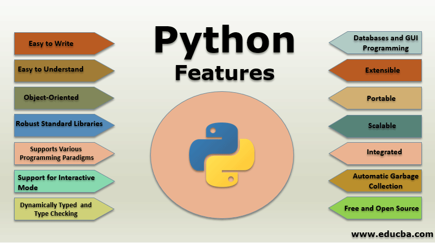

What is Python??
Python is a high-level object-oriented programming language that was created by Guido van
Rossum. It is also called general-purpose programming language as it is used in almost every
domain we can think of as mentioned below:
This list can go on as we go but why python is so much popular let's see it in the next
topic.
- Web Development
- Software Development
- Game Development
- AI & ML
- Data Analytics
You can learn each of this topics one by one. To master the Python you must also know how to
write in HTML.
What is Python Programming?
You guys might have a question in mind that, why python? why not another programming
language?
So let me explain:
Every Programming language serves some purpose or use-case according to a domain. for eg,
Javascript is the most popular language amongst web developers as it gives the developer the
power to handle applications via different frameworks like react, vue, angular which are
used to
build beautiful User Interfaces. Similarly, they have pros and cons at the same time. so if
we
consider python it is general-purpose which means it is widely used in every domain the
reason
is it's very simple to understand, scalable because of which the speed of development is so
fast. Now you get the idea why besides learning python it doesn't require any programming
background so that's why it's popular amongst developers as well. Python has simpler syntax
similar to the English language and also the syntax allows developers to write programs with
fewer lines of code. Since it is open-source there are many libraries available that make
developers jobs easy ultimately results in high productivity. They can easily focus on
business
logic and Its demanding skills in the digital era where information is available in large
data
sets.
IEEE spectrum list of top programming language 2021. The list of programming languages is
based
on popularity.

Features of Python programming language
Readable: Python is a very readable language.
Easy to Learn: Learning python is easy as this is a expressive and high level
programming
language, which means it is easy to understand the language and thus easy to learn.
Cross platform: Python is available and can run on various operating systems such as
Mac,
Windows, Linux, Unix etc. This makes it a cross platform and portable language.
Open Source: Python is a open source programming language.
Large standard library: Python comes with a large standard library that has some handy
codes
and functions which we can use while writing code in Python.
Free: Python is free to download and use. This means you can download it for free and
use it
in your application. See: Open Source Python License. Python is an example of a FLOSS
(Free/Libre Open Source Software), which means you can freely distribute copies of this
software, read its source code and modify it.
Supports exception handling: If you are new, you may wonder what is an exception? An
exception is an event that can occur during program exception and can disrupt the normal
flow of program. Python supports exception handling which means we can write less error
prone code and can test various scenarios that can cause an exception later on.
Advanced features: Supports generators and list comprehensions. We will cover these
features later.
Automatic memory management: Python supports automatic memory management which means
the
memory is cleared and freed automatically. You do not have to bother clearing the
memory.

What Can You Do with Python?
You may be wondering what all are the applications of Python. There are so many applications
of
Python, here are some of the them.
Web development Web framework like Django and Flask are based on Python. They help you
write server side code which helps you manage database, write backend programming logic,
mapping urls etc.
Machine learning There are many machine learning applications written in Python.
Machine
learning is a way to write a logic so that a machine can learn and solve a particular
problem on its own. For example, products recommendation in websites like Amazon,
Flipkart,
eBay etc. is a machine learning algorithm that recognises user's interest. Face
recognition
and Voice recognition in your phone is another example of machine learning.
Data Analysis Data analysis and data visualisation in form of charts can also be
developed using Python.
Scripting Scripting is writing small programs to automate simple tasks such as sending
automated response emails etc. Such type of applications can also be written in Python
programming language.
Game development You can develop games using Python.
You can develop Embedded applications in Python.
Desktop applications You can develop desktop application in Python using library like
TKinter or QT..
When you click on the navigation it will take to same page but different location, or
different
external website.

Python installation is pretty simple, you can install it on any operating system such as
Windows, Mac OS X, Ubuntu etc. Just follow the steps in this article Python Installation